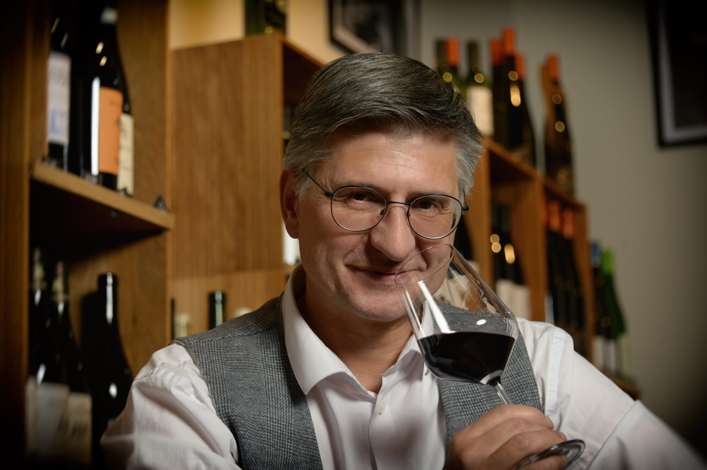

Leidenschaft für Wein
Wir sind ein inhabergeführter Weinhandel im Herzen von Gladbeck seit 2002. Unser Anspruch: nicht einfach Wein zu verkaufen, sondern echte Entdeckungen zu ermöglichen. Bei uns finden Sie Weine, die Geschichten erzählen – von Winzern, die mit Leidenschaft und Überzeugung arbeiten.
Ob Sie einen besonderen Wein für ein Geschenk suchen, eine Weinprobe erleben möchten oder einfach Lust haben, Neues zu entdecken – wir sind Ihr Ansprechpartner. Persönlich, kompetent und immer mit einem Lächeln.
Unser Laden in der Marktstraße 6 ist ein Ort zum Verweilen, Probieren und Genießen. Mit unserer Weinbar, regelmäßigen Veranstaltungen und einer sorgfältig kuratierten Auswahl an Weinen, Feinkost und Spirituosen bieten wir Ihnen ein einzigartiges Erlebnis.


Der Mensch dahinter
Wein hat mich schon immer fasziniert – nicht als Statussymbol, sondern als Brücke zu Menschen, Landschaften und Geschichten. Als ich EntdeckerWeine gründete, hatte ich einen einfachen Traum: einen Ort zu schaffen, an dem jeder Wein entdecken kann – egal ob Einsteiger oder Kenner.
Die Marktstraße 6 in Gladbeck ist seitdem mehr als ein Weinhandel. Es ist ein Ort des Austauschs, der Entdeckung, des Genusses. Hier verkoste ich persönlich mit Ihnen, empfehle Ihnen genau den Wein, den Sie suchen – und manchmal auch den, von dem Sie noch gar nicht wussten, dass Sie ihn suchen.
Meine Reisen führen mich regelmäßig zu Winzern in Frankreich, Italien, Spanien, Deutschland und darüber hinaus. Ich kaufe, was mich begeistert – und das bringe ich mit nach Gladbeck.
— Martin VolmerUnser Team
Assistant-Sommelière mit WSET-Level 3-Abschluss. Christiane liegt das Genießen im Blut und – mehr noch – auf der Zunge. Seit 2015 bildet sie das Rückgrat der Mannschaft – mit Wissen, Neugier, Organisationstalent und schier unglaublicher Geduld gegenüber ihrem Chef. Christiane liebt es, Winzer zu besuchen, Weinregionen zu erwandern und immer wieder neue Weine und Spezialitäten zu entdecken. Kein Wunder, dass Sohn Christoph ein Sterne-dekorierter Spitzenkoch geworden ist und in Freiburg mit dem „Jacobi" ein eigenes Spitzenrestaurant führt.
Anerkannte Beraterin für Deutschen Wein (DWI). Fine Dining ist Jennas Ding: Fast zehn Jahre arbeitete sie im Goldenen Anker von Sternekoch Björn Freitag in Dorsten. Es wundert nicht, dass sie dort Weine kennenlernen durfte, die wir uns nur gönnen, wenn Weihnachten und Ostern auf einen Tag fallen. Auch wenn sie selbst eher Weine mit Ecken und Kanten mag, kennt sich die gebürtige Gladbeckerin bestens auch mit unseren Weinen für jeden Tag aus und findet für jeden den passenden Tropfen.
Unsere Werte
Bei uns spricht kein Chatbot, kein Algorithmus – sondern ein Mensch, der wirklich weiß, was er empfiehlt. Persönliche Beratung ist unser wichtigstes Qualitätsmerkmal.
Wir führen nicht einfach alles. Wir führen das, wovon wir wirklich überzeugt sind. Jeder Wein in unserem Sortiment wurde persönlich verkostet und ausgewählt.
Wir lieben es, unbekannte Winzer zu finden, vergessene Rebsorten zu entdecken und Ihnen Weine zu zeigen, die Sie überraschen. Das steckt schon im Namen.
Unser Laden ist ein Ort zum Verweilen, zum Plaudern, zum Probieren. Wir freuen uns über jeden Besucher, dem wir ein Lächeln schenken können.
Exzellenter Wein muss nicht teuer sein. Wir haben Weine ab 6,50 €. Geschmack ist nicht immer nur eine Frage des Preisschilds.
Wir bevorzugen ökologisch wirtschaftende Winzer, biodynamische Erzeuger und kurze Transportwege, wo immer dies möglich ist.
Unser Geschmack ist ganz einfach – wir mögen von allem einfach das Beste. Und so suchen wir für Sie immer das Beste – ob Wein, Schokolade, Käse oder Brot.
Bei uns können Sie mit allen Sinnen genießen: Neben Weinproben veranstalten wir auch Konzerte, Lesungen und Ausstellungen.
Wir sind ein lokales Unternehmen mit Herz. Gladbeck und das Ruhrgebiet sind unsere Heimat, und viele Kunden und Lieferanten sind unsere Nachbarn und Freunde.
„Wein zu verkaufen ist einfach. Menschen für Wein zu begeistern – das ist das Schöne an meiner Arbeit."— Martin Volmer
Wir freuen uns auf Sie
Marktstraße 6 · 45964 Gladbeck · Mi–Fr 11–23 · Sa 10–15 Uhr